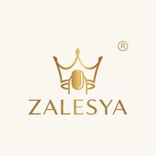
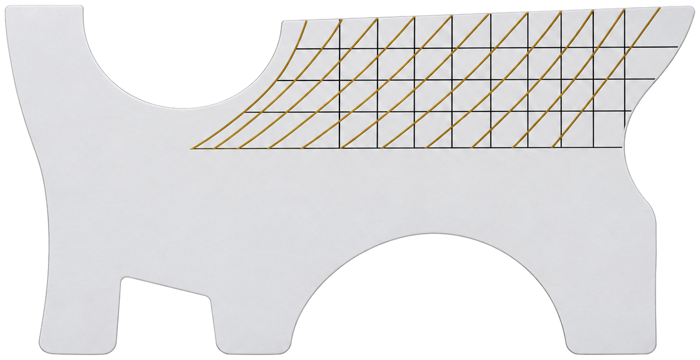
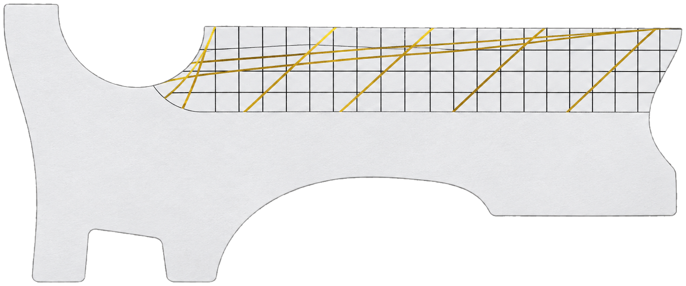

ZALESTUDIO
Idioma
ES
/
EN
Abrir foto
Hacer foto
Plantillas
Etiquetas
Calco
Moldes
Evaluar
Lienzo
Trabajos
Deshacer
Rehacer
Ajustar
Borrar todo
Guardar imagen
Compartir
Presentar
Guía
Cuenta
Salir
30%
Curva C
40%
Curva C
50%
Curva C
Invertir
Más suave
Más visible
Girar 1°
Girar 1°
Reducir
Ampliar
Medida regla
Editar
Duplicar
Eliminar
Listo
1°
1°
Ampliar
Reducir
Más suave
Más visible
Fijar
Mover molde
Quitar
1°
1°
90°
Ampliar
Reducir
Quitar
0°
Ocultar
Regla
Salir

ZaleStudio
Nail Training · by ZALESYA
Abrir foto
Hacer foto
Plantillas
Lienzo en blanco
Mis trabajos
Guía de uso
Cancelar
Cambiar cámara
Texto
Cancelar
Aceptar
Mis trabajos
Cerrar
Entendido
Guía de ZaleStudio
Cerrar
¿Cuánto mide lo que has marcado en la regla?
Otra medida
mm
Cancelar
Aceptar
Moldes

Molde de estructura

Molde de stiletto
Cancelar
¿Seguro?
Cancelar
Sí
ES
/
EN
ZaleStudio
Nail Training · by ZALESYA
👁
👁
👁
,
.
👁
👁
·
·
© ZALESYA® · ZaleStudio